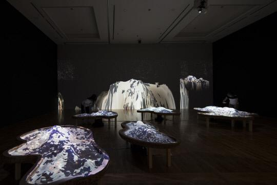
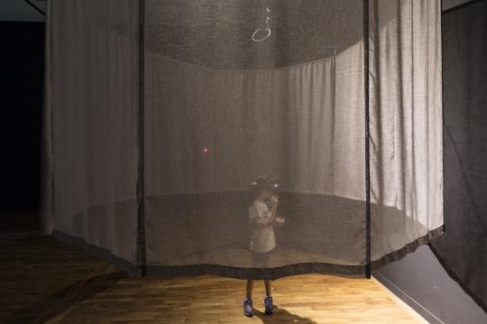
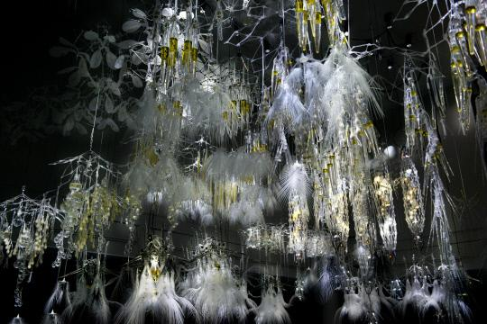
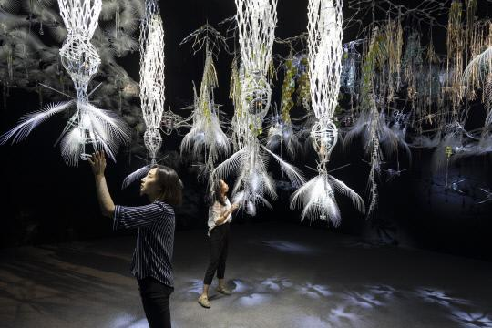
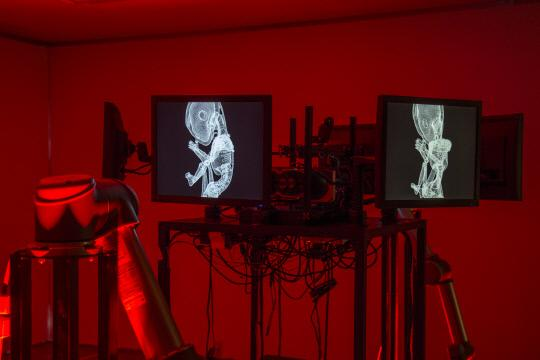
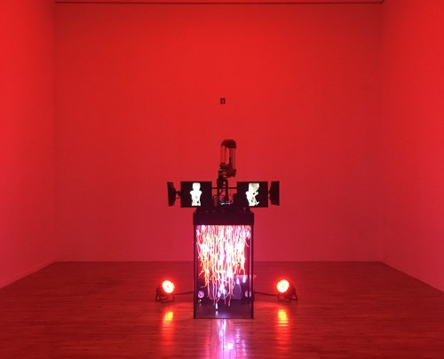

인터랙티브 아트(Interactive Art)

인터랙티브 아트는 디지털 미디어를 이용해 관객과 작품의 상호작용이 가능한 디지털 아트를 말해요. 전반적인 작품의 전시 형태는 작가가 계획하나 이를 감상하는 관객의 참여를 통해 작품이 완성되는 것이죠! 2018 대전비엔날레 전시 작품과 함께 자세히 알아보도록 해요.

미디어 아티스트이자 연구원으로서 예술 안에서의 생명이라는 주제를 탐구하며 가상생태계를 몰입형 환경으로서 만들고 발전시키는 지하루 작가와 소프트웨어 개발자인 그라함 웨이크필드의 작품, <중첩 속으로>

자연이 작동하는 방식을 바탕으로 만들어진 작품 속 가상의 세계는 몰입형 인터페이스*를 통해 관객과의 상호작용을 자연스럽게 유도하고, 이를 통해 관객은 인공 생태계의 복잡한 피드백 구조를 하나의 개체로서 체험하게 돼요. 관객이 상호작용 함으로서 작품 속 세계를 혼합현실의 형태로 경험할 수 있는 인터랙티브 아트인 것이죠. 특이한 점은 관객과 작품의 상호작용이 즉각적으로 이루어짐에도 불구하고 관객(인간)의 영향력이 미치는 범위는 제한적이라는 것이에요. 이는 작품의 가상세계 속 인공자연은 현실의 자연처럼 안으로부터 진화-확장된다는 것과 인간중심주의에서 탈피해 우리가 사는 세계와 중첩될 수 있는 대안적인 세상을 이야기하고자 하는 작가의 의도가 반영된 것이에요. 인터랙티브 아트, 즉 관객과의 상호작용이 작가의 의도 투영의 도구가 된 작품이라 할 수 있죠.
*몰입형 인터페이스: 사용자가 자신을 서비스 중심에 놓고 몰입할 수 있는 IT서비스를 말해요. 기존의 사용자인터페이스(UI)에서 사용자 경험(UX)을 넘어 사용자가 직접 주인공이 되는 것!

종합 예술가이자 인터랙티브 환경 구조물을 개발하는 국제적 연구자 및 작가 그룹인 LAS(Living Architecture Systems)의 디렉터 필립 비즐리의 작품 <빛나는 토양>

나무처럼 생긴 이 작품은 아바타의 한 장면이 연상되는데요. 실제로도 비슷하게 움직여요. 깃털처럼 생긴 가지를 만지면 진동이 발생하고, 가까이 가면 꽃, 생강, 사향 같은 향을 내뿜고 빛을 내면서 ‘살아 있는 생명체’처럼 행동하거든요. 이렇게 상호작용이 가능한 이유는 마이크로웨이브 감지기*를 사용했기 때문이에요. 때문에 수동적인 반응에 그치지 않고 그 옆의 조각에 신호를 전달해 연쇄 반응이 일어나기도 해요. 작가는 관객의 상호작용을 이용해 살아있는 건축물을 표현한 것이죠.
*마이크로웨이브 감지기: 어떤 파동의 파동원과 관찰자의 상대속도에 따라 진동수와 파장이 바뀌는 도플러 원리를 이용한 것이에요. 보안을 요하는 장소에 이용돼요

공학적 접근을 통한 뉴미디어 설치 작업 및 공연의 실험적인 형태를 추구하는 미디어 아티스트 김형중의 (id: niahc_01)

로봇팔, 다각도의 태아의 X선 영상이 나오는 모니터, 유리통 안에 화려하게 늘어진 빛나는 전선 더미, 방 전체를 감싸는 조명. SF영화를 연상시키는 이 설치물은 기계화된 인간, 인간화된 기계의 모습과 인공 생명체의 정체성에 대한 실험을 축적한 작품이에요. 인간의 일자리가 자동화로 대체되고 있는 현재, 작가는 미래의 노동력을 담당할 주체로 컴퓨터와 결합된 인공의 생명체를 만든 것이죠.
작품 중앙에는 가상화폐를 채굴하는 컴퓨터(채굴기)가 위치하고 노동력을 상징하는 로봇 팔이 분주하게 움직이며 내장된 카메라를 통해 관람객을 인지하면 혼란 상태에 빠진 듯한 빨간 조명과 함께 소리가 나와요. 관객은 작품과의 상호작용을 통해 새로운 ‘종’과 조우한 듯한 감정을 느낄 수 있겠죠?
(재미있는 점은 실제로 전시기간동안 작품 속 채굴기는 가상화폐를 채굴하고 있었다는 것이에요.)
이제 인터랙티브 아트가 뭔지는 알겠는데…
가상화폐? 채굴? 요새 뉴스에도 많이 등장하나 무엇인지는 잘 모르겠다고요?
다음 열매를 열어보면 알 수 있어요!